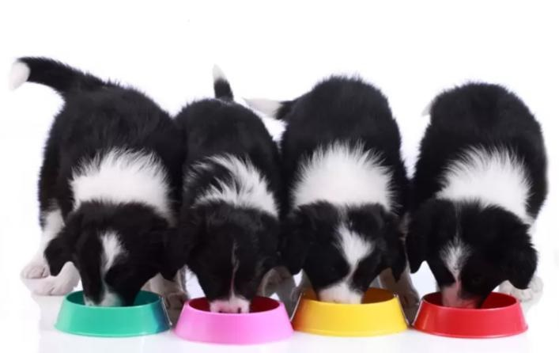

BORDER COLLIE
Alimentos Naturales Recomendados

Salchichas, pavo, jamón
Los reúno en la misma clase porque, aunque
estos productos sean muy utilizados para los ejercicios de
búsqueda o como parte de relleno de los juguetes,no son
los más adecuados, si hablamos de productos naturales y sanos.
Tienen aditivos, mucha sal, y no son el 100% carne.
En el caso de que quieras usar estos productos, intenta que
sean bajos en sal y con la mayor proporción de carne posible,
normalmente ronda entre el 40-70%.
Queso
Podemos decir que es un ingrediente más sano que los anteriores
si hablamos de quesos enteros o en cuñas, y muy valorado
por nuestros perros, pero antes de usarlo, asegúrate de
que a tu perro le sienta bien, y que no vaya a tener
intolerancia a la lactosa. Además también hay quesos que
contienen aditivos y sal, por lo que debes intentar buscar
el más natural posible. El queso podemos darlo en trocitos,
untarlo o aplastarlo para rellenar un juguete.
Se puede congelar y mezclar con otros ingredientes de la lista.
Latas de comida humeda
Si eliges este ingrediente para rellenar los juguetes de
tu perro, siempre ten en cuenta que sea de buena calidad,
libre de cereales y con el mayor porcentaje de carne posible.
Yogurt
Al igual que con el queso, debes tener cuidado con la
lactosa, pero es un ingrediente estupendo para mezclar
y hacer helados perrunos.
Además aporta bacterias beneficiosas
para la flora intestinal de nuestros perros, al igual que el queso.
Huesos carnosos
Para trabajos de olfato, podemos esconder los huesos
carnosos por la casa o la parcela, si dispones de una,
y animarlos a buscar.
En este caso también debes empezar con
escondites fáciles e ir aumentando la dificultad.
Fruta y verdura
Puedes dar la ración diaria de fruta y verdura en puré
o en trocitos, según si lo que quieres es rellenar un juguete o
hacer trabajo de olfato.
Hígado y pechuga de pollo
Ambos son ingredientes estupendos,sanos y nutritivos.
Además, les encanta por el olor y sabor.También puedes
utilizarlos como premios “deshidratados”para educar
a tu perro o para trabajo de olfato.
Inicio
Características De La Raza
Edad del Perro Vs La Edad Humana
Alimentos Naturales Recomendados
Ejercicios Para Su Estimulación
Maria Valentina Bautista Bermúdez
9B